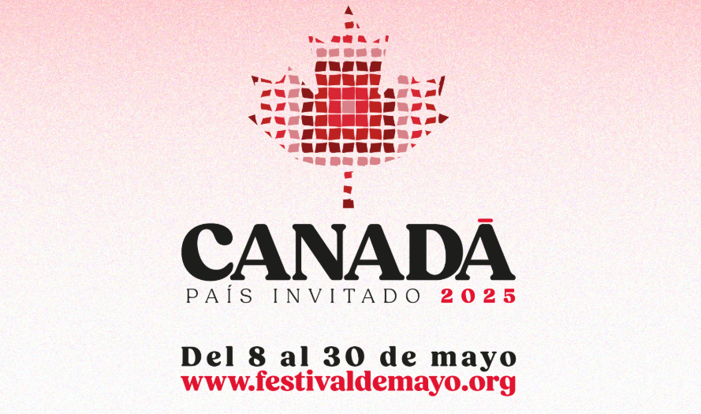

Guadalajara celebra el Festival Cultural de Mayo 2025 con Canadá como país invitado

La ciudad de Guadalajara se prepara para albergar la edición número 28 del Festival Cultural de Mayo (FCM), uno de los eventos culturales más importantes del país. El festival se llevará a cabo del 8 al 30 de mayo y tendrá como país invitado a Canadá, con la participación de más de 460 artistas nacionales e internacionales.
Con una programación que abarca 44 actividades en 21 sedes del Área Metropolitana de Guadalajara, el FCM 2025 ofrecerá una amplia variedad de expresiones artísticas que incluyen música, danza, teatro, arte visual y cine. Entre los recintos que albergarán los eventos se encuentran el Teatro Degollado, el Museo Cabañas, el Ex Convento del Carmen y el Conjunto Santander de Artes Escénicas.
Canadá, el invitado de honor
Este año, Canadá será el país invitado y traerá al festival una destacada delegación artística con representación de diversas provincias como Quebec, Ontario, Alberta y Columbia Británica. Las actividades canadienses incluirán presentaciones musicales, exposiciones visuales, espectáculos escénicos y talleres, varios de ellos protagonizados por artistas de comunidades originarias como los Inuit y los Métis.
Destacados del programa
Uno de los principales atractivos será la participación de la Orquesta Filarmónica de Jalisco, que ofrecerá dos conciertos en el Teatro Degollado en conmemoración del 150 aniversario del nacimiento del compositor francés Maurice Ravel. El repertorio incluirá obras emblemáticas como La Valse, Daphnis et Chloé, Pavana para una infanta difunta y la Rapsodia Española.
En el ámbito visual, el Museo Cabañas presentará la exposición colectiva “Habitar el Norte”, con obras de 10 artistas canadienses contemporáneos. A su vez, el Ex Convento del Carmen abrirá dos exposiciones destacadas: una retrospectiva del fotógrafo tapatío Damián Siqueiros y la colectiva “La Plástica de Jalisco celebra a Canadá”.
El arte tradicional mexicano también tendrá presencia con la muestra “Sagrado Arte Wixárika”, que se exhibirá en la Sala Giroleta del Museo de Sitio del Palacio de Gobierno. La exposición incluirá instrumentos musicales tradicionales tallados y decorados con chaquira por artesanos de la comunidad wixárika.
Cultura para todos
La edición 2025 del Festival Cultural de Mayo prioriza la inclusión y la accesibilidad, por lo que se ofrecerán funciones gratuitas, presentaciones didácticas para niños y encuentros directos con los artistas. Asimismo, se realizarán talleres abiertos al público en escuelas, centros culturales y espacios comunitarios.
Con esta edición, el Festival reafirma su papel como plataforma de diálogo artístico internacional, fortaleciendo la relación cultural entre México y Canadá, y consolidando a Guadalajara como una capital cultural del continente.